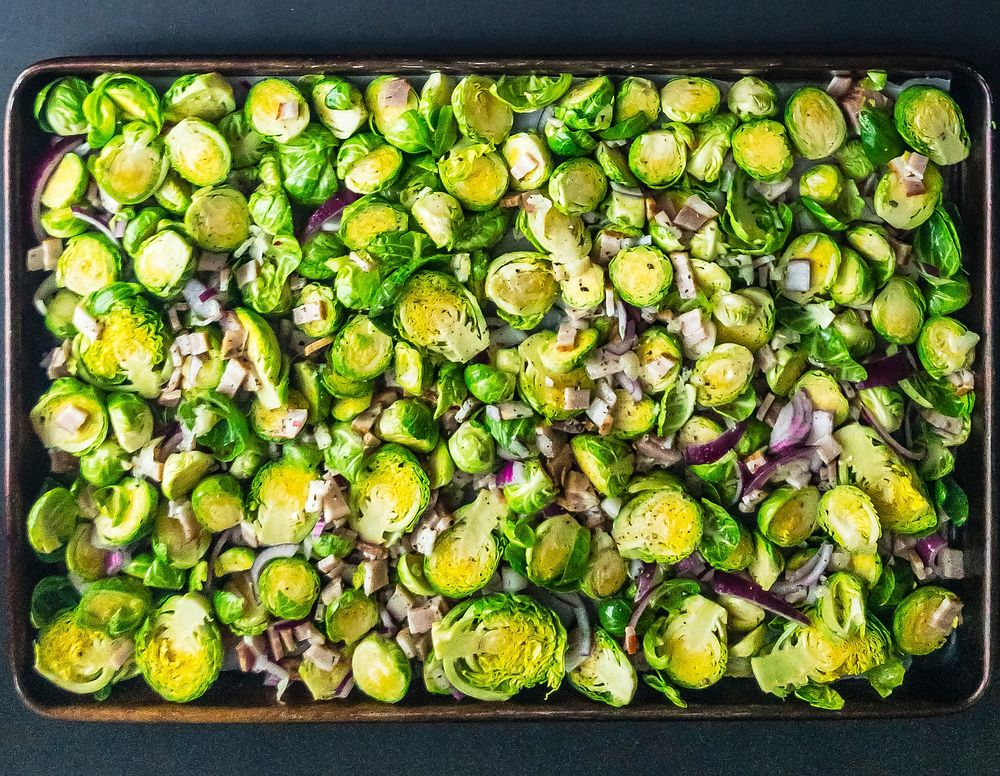

Home
Savory and Spicy Oven Roasted Brussels Sprouts

Brussels sprouts about to go in the oven and become roasty, toasty, spicy and savory.
These Brussels Sprouts are my go-to recipe for Thanksgiving. When I have the time (and the oven space), I let them roast until the edges of the leaves are crispy.
If you're in a hurry or the oven space is scarce, these work perfectly in the air fryer as well
Ingredients
- 1 1/2 pounds Brussels sprouts
- 2 tablespoons olive oil
- kosher salt and black pepper
- garlic powder
- paprika
- chili flakes
- OPTIONAL bacon crumbles
Steps
- Preheat oven to 400 degrees Fahrenheit.
- Clean and trim Brussels sprouts and cutting any very large heads in half through the core. (It's fine if some of the outer leaves fall off - just bake those along with the rest of the sprouts. They get extra crispy and are delicious!
- Place the sprouts in a large bowl and drizzle with olive oil, tossing to evenly coat. Add in your favorite spices to taste.
- Pour the Brussels sprouts onto a large sheet pan (you want them to be in a single layer).
- Roast in the oven for 20 to 30 minutes, turning halfwayh through the cooking time, until golden and lightly caramelized.
- Serve hot.
Home